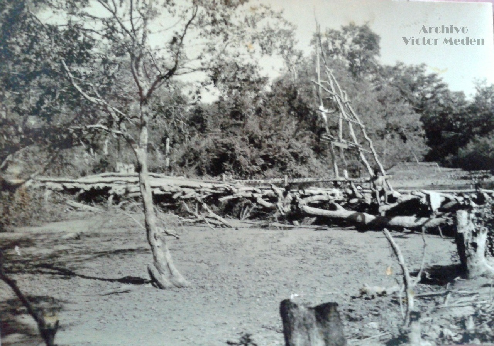

Generalmente todos los fortines eran construidos cerca de una aguada, debido a que el personal destinado a ese fortín necesitaba agua dulce y potable para la supervivencia.
Cuando se hacían los reconocimientos en el Chaco, se buscaba una aguada que reúna las condiciones para asegurar que el personal cuente con agua potable.
Cabe señalar que la aguada del Fortín Toledo reunía esos requisitos y servía como liquido vital para el personal asentado en ese fortín, una vez iniciada la guerra del Chaco esta aguada sirvió como punto de abastecimiento de este líquido vital al II Cuerpo de Ejército.
Para la distribución del agua se habían utilizado vehículos cisternas.